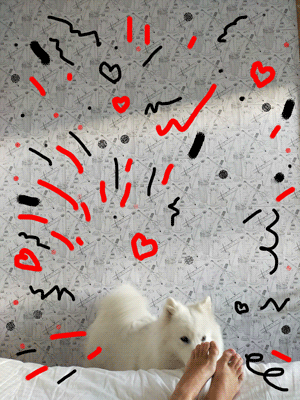

About Bella
Bella is a dog. She looks like a white wolf. She loves socializing and is very curious. Other favourite activities include: sniffing, jumping, singing. But on top of that is eating. Bella is a real foodie.
Bella in action
Bella's Characteristics
- She is white.
- She loves snow.
- She likes sniffing.
Bella's friends
Bella has great friends. Click on the links below to read more about them